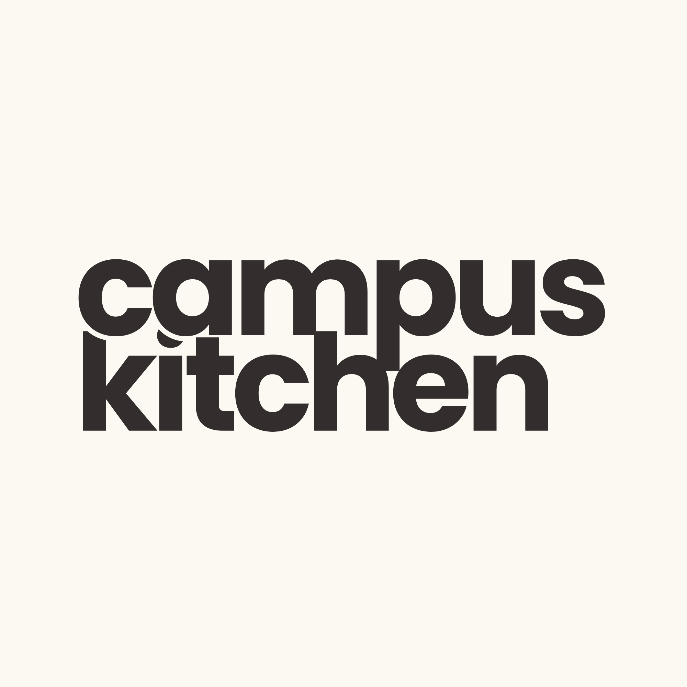
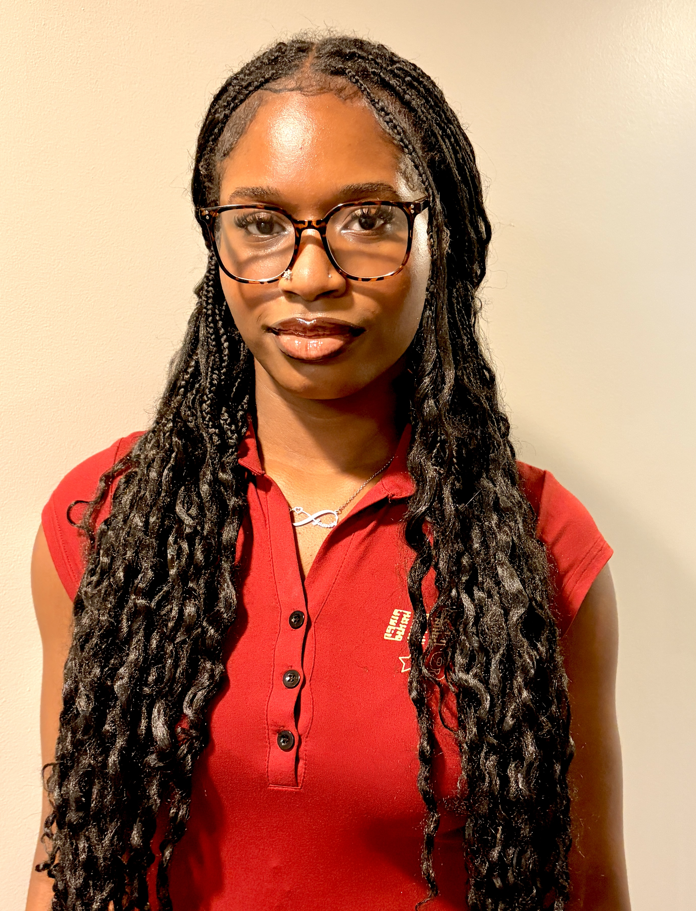

Meet the Creator
I am a Computer Science student at Georgia State University with a passion for software development and using technology to solve everyday problems. I enjoy learning how software can be used to create solutions that are practical and useful in people's everyday lives. As a college student, I understand firsthand how difficult it can be to balance school, meals, grocery shopping, and a budget. Finding affordable meals, deciding what to cook, and keeping track of groceries can sometimes feel overwhelming, especially while managing a busy college schedule.
My own experiences with these challenges inspired me to create Campus Kitchen. I wanted to build a website that could bring meal planning, recipes, grocery lists, and budgeting together in one place. Instead of students having to figure everything out separately, Campus Kitchen is designed to make the process simpler and more organized. I also wanted Campus Kitchen to be more than just a recipe website. I hope to eventually include features that can help students reduce food waste, share extra food with other students, and discover meals based on the ingredients they already have.
Creating Campus Kitchen gives me an opportunity to connect my personal experiences as a college student with my passion for technology. Through this project, I hope to strengthen my software development skills while creating a solution that can make everyday life a little easier for other students.